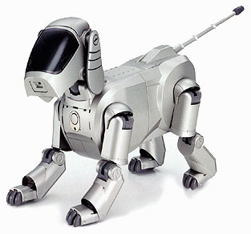
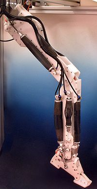
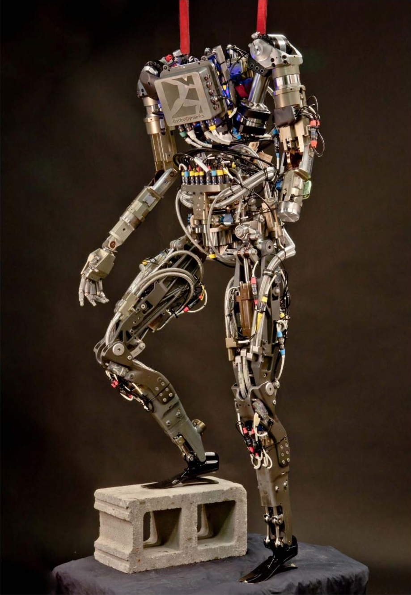

Основы робототехники
Роботехника - сравнительно новое и интенсивно развивающееся научное направление, вызванное к жизни необходимостью освоения новых сфер и областей деятельности человека, а также потребностью широкой автоматизации современного производства, направленной на резкое повышение его эффективности. Использование автоматических программируемых устройств - роботов - в исследовании космоса и океанских глубин, а с 60-х гг. нашего столетия и в производственной сфере, быстрый прогресс в области создания и использования роботов в последние годы обусловили необходимость интеграции научных знаний ряда смежных фундаментальных и технических дисциплин в едином научно-техническом направлении - робототехнике.
... Навстречу ему золотые служанки вмиг подбегали,
Подобные девам живым, у которых
Разум в груди заключен и голос, и сила,
Которых самым различным трудам обучали
Бессмертные боги...
У современного человека эти "служанки" непременно ассоциируются с антропоморфными, т.е. созданными по образу и подобию человека, автоматическими универсальными устройствами - роботами. Робототехника опирается на такие дисциплины, как электроника, механика, информатика, а также радиотехника и электротехника. Выделяют строительную, промышленную, бытовую, авиационную и экстремальную (военную, космическую, подводную) робототехнику. Сегодня человечество практически вплотную подошло к тому моменту, когда роботы будут использоваться во всех сферах жизнедеятельности. Поэтому курсы робототехники и компьютерного программирования необходимо вводить в образовательные учреждения.
Изучение робототехники позволяет решить следующие задачи, которые стоят перед информатикой как учебным предметом. А именно, рассмотрение линии алгоритмизация и программирование, исполнитель, основы логики и логические основы компьютера. Также изучение робототехники возможно в курсе математики (реализация основных математических операций, конструирование роботов), технологии (конструирование роботов, как по стандартным сборкам, так и произвольно), физики (сборка деталей конструктора, необходимых для движения робота-шасси).
Классы роботов
Манипуляционный робот — автоматическая машина (стационарная или передвижная), состоящая из исполнительного устройства в виде манипулятора, имеющего несколько степеней подвижности, и устройства программного управления, которая служит для выполнения в производственном процессе двигательных и управляющих функций. Такие роботы производятся в напольном, подвесном и портальном исполнениях. Получили наибольшее распространение в машиностроительных и приборостроительных отраслях.
Мобильный робот — автоматическая машина, в которой имеется движущееся шасси с автоматически управляемыми приводами. Такие роботы могут быть колёсными, шагающими и гусеничными (существуют также ползающие, плавающие и летающие мобильные робототехнические системы.
Компоненты роботов
Приводы — это «мышцы» роботов. В настоящее время самыми популярными двигателями в приводах являются электрические, но применяются и другие, использующие химические вещества или сжатый воздух.
Двигатели постоянного тока: В настоящий момент большинство роботов используют электродвигатели, которые могут быть нескольких видов.
Шаговые электродвигатели: Как можно предположить из названия, шаговые электродвигатели не вращаются свободно, подобно двигателям постоянного тока. Они поворачиваются пошагово на определённый угол под управлением контроллера. Это позволяет обойтись без датчика положения, так как угол, на который был сделан поворот, заведомо известен контроллеру; поэтому такие двигатели часто используются в приводах многих роботов и станках с ЧПУ.
Пьезодвигатели: Современной альтернативой двигателям постоянного тока являются пьезодвигатели, также известные как ультразвуковые двигатели. Принцип их работы весьма оригинален: крошечные пьезоэлектрические ножки, вибрирующие с частотой более 1000 раз в секунду, заставляют мотор двигаться по окружности или прямой. Преимуществами подобных двигателей являются высокое нанометрическое разрешение, скорость и мощность, несоизмеримая с их размерами. Пьезодвигатели уже доступны на коммерческой основе и также применяются на некоторых роботах.
Воздушные мышцы: Воздушные мышцы — простое, но мощное устройство для обеспечения силы тяги. При накачивании сжатым воздухом мышцы способны сокращаться до 40 % от своей длины. Причиной такого поведения является плетение, видимое с внешней стороны, которое заставляет мышцы быть или длинными и тонкими, или короткими и толстыми[источник не указан 987 дней]. Так как способ их работы схож с биологическими мышцами, их можно использовать для производства роботов с мышцами и скелетом, аналогичными мышцам и скелету животных.
Электроактивные полимеры: Электроактивные полимеры — это вид пластмасс, который изменяет форму в ответ на электрическую стимуляцию. Они могут быть сконструированы таким образом, что могут гнуться, растягиваться или сокращаться. Впрочем, в настоящее время нет ЭАП, пригодных для производства коммерческих роботов, так как все ныне существующие их образцы неэффективны или непрочны.
Эластичные нанотрубки: Это — многообещающая экспериментальная технология, находящаяся на ранней стадии разработки. Отсутствие дефектов в нанотрубках позволяет волокну эластично деформироваться на несколько процентов. Человеческий бицепс может быть заменён проводом из такого материала диаметром 8 мм. Подобные компактные «мышцы» могут помочь роботам в будущем обгонять и перепрыгивать человека.
Способы перемещения
- Колёсные и гусеничные роботы
- Шагающие роботы
Другие методы перемещения:
- Летающие роботы (в том числе БПЛА – беспилотные летательные аппараты)
- Ползающие роботы
- Роботы, перемещающиеся по вертикальным поверхностям
- Плавающие роботы.
Системы управления
Под управлением роботом понимается решение комплекса задач, связанных с адаптацией робота к кругу решаемых им задач, программированием движений, синтезом системы управления и её программного обеспечения.
По типу управления робототехнические системы подразделяются на:
Биотехнические:
- командные (кнопочное и рычажное управление отдельными звеньями робота);
- копирующие (повтор движения человека, возможна реализация обратной связи, передающей прилагаемое усилие, экзоскелеты);
- полуавтоматические (управление одним командным органом, например, рукояткой всей кинематической схемой робота);
Автоматические:
- программные (функционируют по заранее заданной программе, в основном предназначены для решения однообразных задач в неизменных условиях окружения);
- адаптивные (решают типовые задачи, но адаптируются под условия функционирования);
- интеллектуальные (наиболее развитые автоматические системы);
Интерактивные:
- автоматизированные (возможно чередование автоматических и биотехнических режимов);
- супервизорные (автоматические системы, в которых человек выполняет только целеуказательные функции);
- диалоговые (робот участвует в диалоге с человеком по выбору стратегии поведения, при этом как правило робот оснащается экспертной системой, способной прогнозировать результаты манипуляций и дающей советы по выбору цели).
Среди основных задач управления роботами выделяют такие:
- планирование положений;
- планирование движений;
- планирование сил и моментов;
- анализ динамической точности;
- идентификация кинематических и динамических характеристик робота.
В развитии методов управления роботами огромное значение имеют достижения технической кибернетики и теории автоматического управления.
Подвиды современных роботов
- Промышленные роботы
- Медицинские роботы
- Бытовые роботы
- Роботы для обеспечения безопасности
- Боевые роботы
- Роботы-учёные
К настоящему времени роботы внедрены во многие сферы деятельности человека и продолжают дополнять и иногда заменять людской труд как в опасных видах деятельности, так и в повседневной жизни.